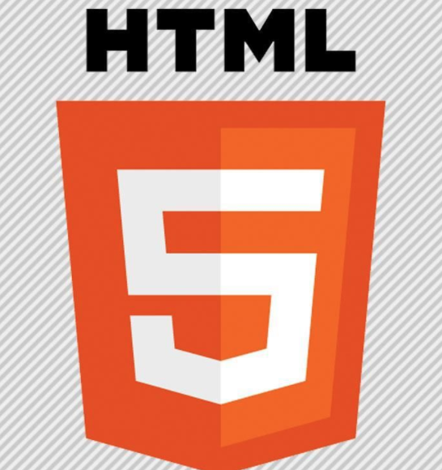

个人项目
-

移动端活动页面:
技术:H5,css3,zepto.js,theater.js
页面具有输入识别，效果丰富，科技感强的特点。 -
网页9字华容道拼图:还提供计时、暂停和重置功能；
网页贪吃蛇:还提供计数，位置重置功能； -

Hybrid简易微信：
通过H5+，MUI，Hbuilder，网易云信SDK，安卓和IOS模拟器,实现了一个简易微信. -

爬虫系统:
每30分钟爬取“百度小说”的类名，结果存于Mysql，具有结果显示web页面。 -

Web即时通讯系统：
node.js，Socket.io，Bootstrap
功能：可在浏览器群聊、私聊。 -

移动端新年贺卡：
简易的新年贺卡。
所读书目


JavaScript高级程序设计(第三版)，node.js开发指南，深入浅出node.js，DOM编程艺术，TCP/IP详解，图解Http，代码整洁之道，疯狂JAVA讲义。


个人爱好：浏览科技和IT资讯，喜欢健身，弹吉他和各类球类运动。
职业目标：前端至美，成为一名优秀的web开发工程师。